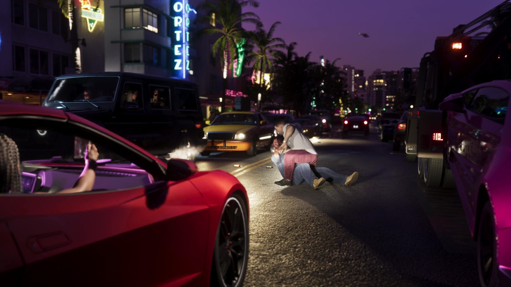
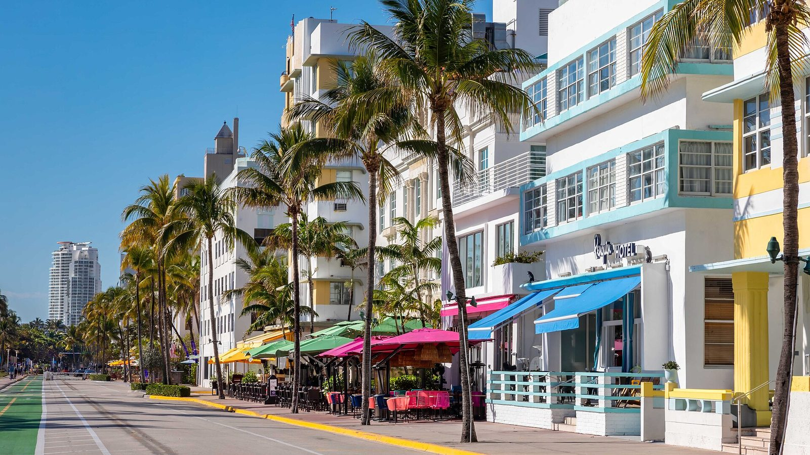
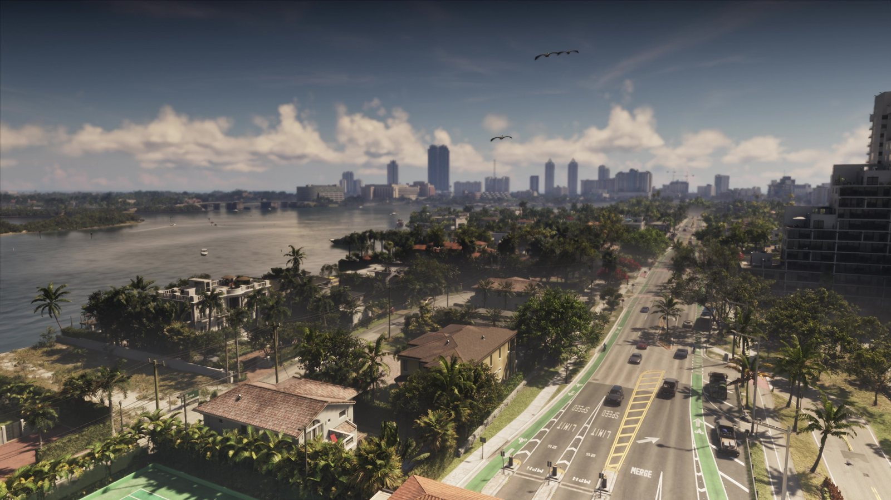
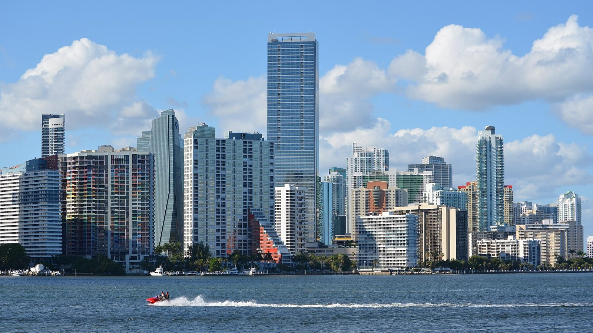

Вайс-Сити и Майами
Опубликовано:
Город узнаётся с первого кадра: ар-деко, пальмы, небоскрёбы у воды. Но это не копия Майами улица в улицу — Rockstar собирает свой город из узнаваемых кусков.


- Вайс-Сити — это Майами, пересобранный Rockstar.
- Узнаются ар-деко Майами-Бич, небоскрёбы Брикелла, мосты-дамбы и пляжи.
- Названия улиц и районов — свои, реальные не используются.
- Сам «Вайс-Сити» впервые появился в первой GTA 1997 года.
Что в игре
Вайс-Сити — крупнейший город штата Леонида. Rockstar описывает его коротко: пляжи, ночная жизнь, яхты и небоскрёбы. В «Расширенном показе» его видно со всех сторон: неон ночных улиц, розовые квартиры, мосты над заливом, крыши с барами и вид на центр с высоты.

Что в реальности
Прототип — Майами и Майами-Бич. Самое узнаваемое — исторический район ар-деко вдоль Ocean Drive: около 800 зданий 1920–40-х годов в пастельных цветах с неоновыми вывесками. В 1979 году район внесли в Национальный реестр исторических мест США — первым из районов XX века.
Второй узнаваемый слой — Брикелл, финансовый центр Майами: стена стеклянных небоскрёбов прямо у залива Бискейн. Такой силуэт стоит на горизонте в кадрах Вайс-Сити.

Район ар-деко чуть не снесли. В 1970-х застройщики собирались заменить старые отели высотками. Барбара Баер Кэпитмен и её Лига сохранения дизайна Майами (основана в 1976 году) добились охраны района. Без этой истории у Rockstar не было бы главной «открытки» Вайс-Сити.
Совпадает и отличается
| Майами | Вайс-Сити | |
|---|---|---|
| Ар-деко отели у пляжа | Ocean Drive, Майами-Бич | 🟢 Есть, неон и пастель |
| Небоскрёбы у воды | Брикелл | 🟢 Есть на горизонте |
| Названия улиц и районов | Реальные | 🔵 Свои, придуманные |
| Масштаб | Мегаполис | 🟡 Сжат для игры |
Почему «Вайс-Сити»
Имя города появилось ещё в первой GTA 1997 года. В 2002 году вышла GTA: Vice City — Майами 1986 года, и её главный ориентир был очевиден: сериал «Полиция Майами» (Miami Vice, 1984–1989). Совпадение не только в слове Vice: Филип Майкл Томас, игравший детектива Таббса в сериале, озвучил в игре Лэнса Вэнса. В GTA 6 город возвращается уже в наши дни.
Источники: Rockstar Games (официальное описание, «Расширенный показ»); National Park Service — National Register of Historic Places (Miami Beach Architectural District, 1979); Miami Design Preservation League.
Реальные фото: Фото: Daniel Christensen, Public domain · Wikimedia Commons; Фото: Robbschultz69, CC BY-SA 4.0 · Wikimedia Commons. Кадры игры: Rockstar Games.
Разборы кадров, слухи и факты за 30 секунд. Подписывайтесь:
YouTubeInstagramTikTok